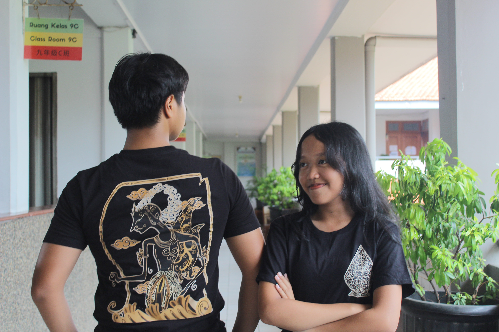
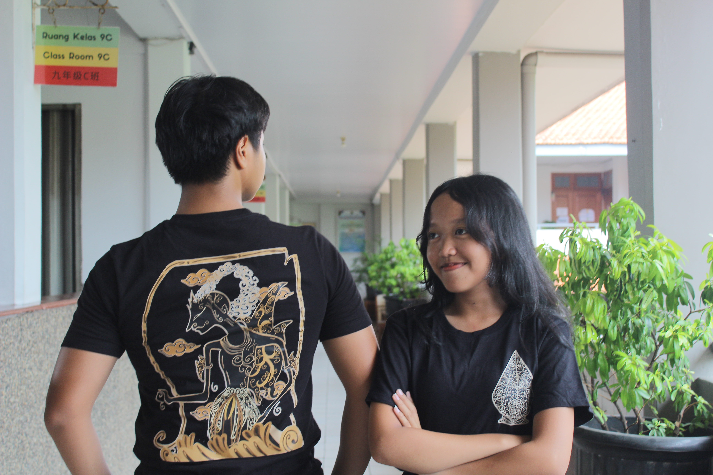

Sangkara Java: Ijen Terra
An adventure to enter deep into the tropical forest of Sulawesi, where various flora grow and have been living, like endemic plants and exotic trees. With green strokes into light and dark, there is a three-dimensional effect as if inviting the audience on a journey into the wild nature of Sulawesi. The details, like branches and shadows, can symbolize the balance of the ecosystem.

Sangkara Java: Southern Sea
The Palindo statue was first discovered in the early 1900s by Dr. Walter Kaudern, a Swedish ethnologist. Since then, it has become one of the most significant cultural artifacts in Indonesia, especially in Central Sulawesi. It is believed to date back to the 14th century and served in religious and ritual contexts, often associated with the practice of ancestor worship and local deities.
.jpg)
.jpg) 

Golden Ink of Wayang: Gatotkaca's Might
This t-shirt carries a typical Sulawesi cultural design with an illustration of a traditional Tongkonan house on the back, symbolizing the identity and philosophy of life of the Torajan people. The ethnic motifs surrounding it add to the traditional impression. On the front, there is writing in the Torajan language, "Tettongko’ Ma’toto’, Lamunan Sangkutu’ Tau", which means "Stand strong, because life is full of challenges." This t-shirt is not just clothing, but also a symbol of respect for cultural heritage and the spread of inspiring messages from local wisdom.

The Wonderful of Papua_ Raja Ampat
This t-shirt carries a typical Sulawesi cultural design with an illustration of a traditional Tongkonan house on the back, symbolizing the identity and philosophy of life of the Torajan people. The ethnic motifs surrounding it add to the traditional impression. On the front, there is writing in the Torajan language, "Tettongko’ Ma’toto’, Lamunan Sangkutu’ Tau", which means "Stand strong, because life is full of challenges." This t-shirt is not just clothing, but also a symbol of respect for cultural heritage and the spread of inspiring messages from local wisdom.

Golden Ink of Wayang: Madri's Loyalty & the Mountain
Tongkonan House is a traditional house typical of the Toraja people in South Sulawesi which has a deep meaning in their culture, traditions, and social life. The word Tongkonan comes from the Toraja language, namely tongkon which means "to sit," with the suffix -an which makes it mean "seat" or a gathering place for the extended family. This house not only functions as a residence, but also as a center of customary power, a place for carrying out ritual ceremonies, and a symbol of family dignity